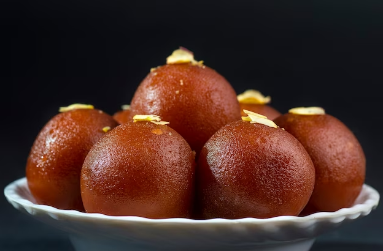

Gulab Jamun Recipe

Description
Gulab jamun is a sweet confectionary or dessert, originating
in the Indian subcontinent and a type of mithai popular in
India, Pakistan, Nepal, the Maldives (where it is known as
gulab ki janu), and Bangladesh, as well as Myanmar. It is
made mainly from milk solids, traditionally from khoya, which
is milk reduced to the consistency of a soft dough. Modern
recipes call for dried or powdered milk instead of khoya. It
is often garnished with dried nuts such as almonds and cashews
to enhance flavour.
Ingredients
-
For the Gulab Jamun
- Crumbled Gulab Jamun Khoya - 2 cups
- Maida (Plain Flour) - 1/4 cup
- Milk Powder - 3 tbsp
- Arrowroot (Paniphal) flour - 3 tbsp
- Ghee (for deep frying) - 1 litres
-
For the Sugar Syrup
- Sugar - 5 cups
- Safforn (Kesar) Strands - 1/4 tbsp
- Cardamom (Eilaichi) Powder - 1/4 tbsp
Steps
-
Preparation of the Sugar Syrup
- Add the sugar and 3 cups of water in a non-stick pan.
- Mix and cook on medium flame for 8-10 minutes while stirring.
- Simmer on medium flame till the syrup is of one string consistency.
- Remove any impurities floating on top of syrup with a slotted spoon.
- Add the saffaron and cardamom powder.
- Continuously heat the sugar syrup on low flame to keep it warm.
-
Preparation of the Gulab Jamun
- Add all ingredients in a bowl and knead it into a very smooth dough.
- Divide this mixture into 30 equal portions and roll it into round
ball. Ensure that there are no cracks on the surface, otherwise the
gulab jamuns will crack while dep-frying them.
- Heat the ghee in a deep non-stick kadhai (utensil) and deep-fry a few
gulab jamums at a time, till they turn golden brown from all sides.
- Drain them well and immediately immerse them in warm suagr syrup.
- Steps 3 and 4 for the remaining gulab jamuns.
- Soak the gulab jamuns in the sugar syrup for atleast 2 hours.
- Serve the gulab jamuns warm or store them refrigertaed for upto 4 days.